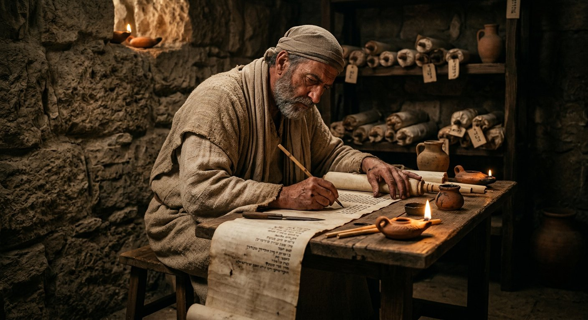
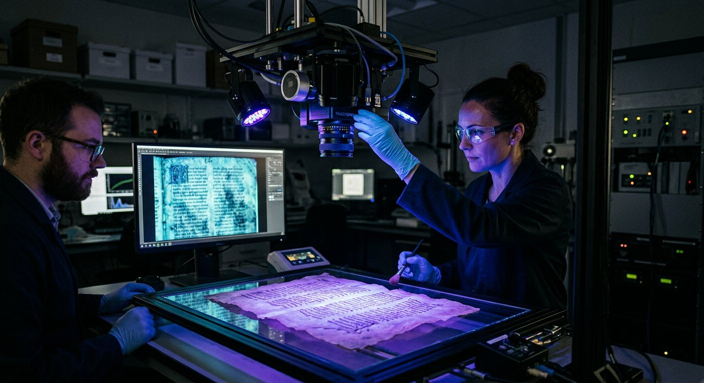
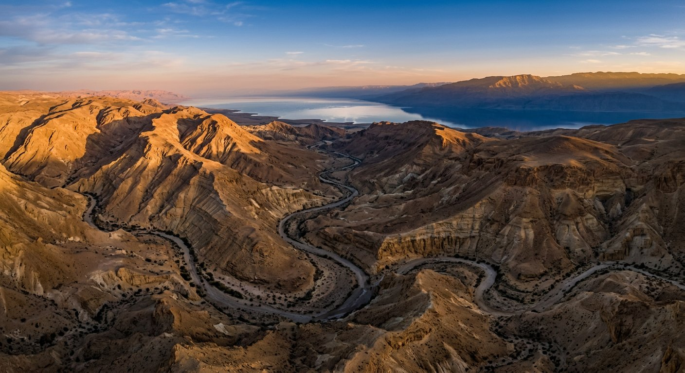
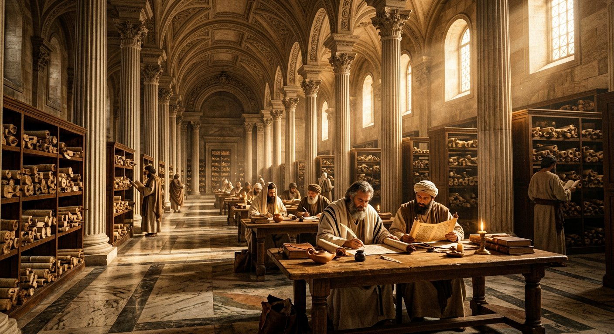
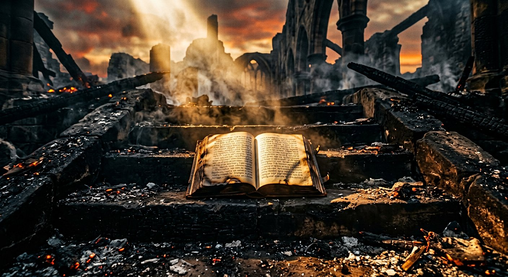

VERBUM
« La Parole qui traverse les millénaires »
Le livre le plus lu · le plus traduit · le plus préservé de l'histoire humaine
Deux mille ans avant notre ère jusqu'aux laboratoires du XXIe siècle : parcourez l'extraordinaire aventure de la Bible. Des milliers de scribes, de massorètes, de moines et de savants ont œuvré, siècle après siècle, pour que sa Parole nous parvienne quasi intacte.
Un livre qui a survécu à tout
“La Bible n'est pas seulement un texte sacré : c'est le plus grand défi de préservation que l'humanité ait jamais relevé — et elle l'a gagné.”
Édit impérial, incendies, persécutions, interdictions, empires disparus : tout a conspiré pour effacer ce livre. Pourtant, des grottes de Qumrân aux presses de Mayence, des scriptoria de Tibériade aux laboratoires d'imagerie multispectrale du XXIe siècle, chaque génération a repris le flambeau. En avril 2026, l'Université de Glasgow elle-même ressuscitait 42 pages que le monde croyait perdues à jamais.
VERBUM réunit ici les témoins les plus anciens et les plus spectaculaires de cette transmission : manuscrits, fragments, codex, traductions — avec leurs textes, leurs analyses et les preuves archéologiques qui les accompagnent.

Le livre le plus diffusé de l'histoire
De Moïse au Codex H
20 jalons de -1450 à 2026. Filtrez par époque, faites glisser la frise, et cliquez sur un événement pour révéler son histoire complète. Pour l'expérience complète — 36 événements cliquables — ouvrez la Grande Frise →
La Bible sur toute la terre
Des lieux de conservation des grands manuscrits jusqu'aux continents où la Bible est aujourd'hui traduite : survolez les points dorés de la carte.
Depuis Gutenberg, plus de 5 milliards d'exemplaires de la Bible ont été imprimés — un record absolu dans l'histoire de l'édition.
Dix galeries pour 3 500 ans d'histoire
Chaque galerie expose les manuscrits, leurs textes originaux traduits en français, et les preuves historiques qui les éclairent.

Les Origines : Moïse et les premiers textes
De la Torah aux rouleaux d'argent de Ketef Hinnom : la naissance de l'Écriture sainte, 1 500 ans avant notre ère.
Découvrir la galerie
Les Copistes et les Massorètes
Esdras, les scribes d'Israël et les massorètes de Tibériade : l'art sacré de la copie jusqu'au Codex Leningradensis.
Découvrir la galerie
Les Manuscrits de la Mer Morte
Qumrân, 1947 : 900 manuscrits, 11 grottes, le Grand Rouleau d'Ésaïe. La preuve que le texte hébreu n'a quasiment pas changé.
Découvrir la galerie
Les Grands Codex Grecs
P52, P66, Vaticanus, Sinaïticus, Alexandrinus : les géants sur lesquels repose le Nouveau Testament moderne.
Découvrir la galerie
Codex H — Les 42 pages perdues
Avril 2026 : l'Université de Glasgow ressuscite par imagerie multispectrale 42 pages des Lettres de Paul perdues au Mont Athos.
Découvrir la galerie
Les Textes Apocryphes
Évangile de Thomas, de Judas, de Marie, livres d'Hénoch : ces textes que l'histoire a écartés — et pourquoi.
Découvrir la galerie
La Septante et les Grandes Traductions
De l'hébreu au grec, du grec au latin : la Septante, la Vulgate de Jérôme, la Peshitta syriaque, Wyclif, Luther et Segond.
Découvrir la galerie
Gutenberg et la Révolution de l'Imprimerie
1455, Mayence : la Bible à 42 lignes sort de presse et démocratise l'accès à la Parole dans le monde entier.
Découvrir la galerie
Preuves Historiques et Archéologiques
Stèle de Mésha, cylindre de Cyrus, inscription de Pilate : quand la terre confirme l'Écriture.
Découvrir la galerie
La Bible Résiste à Toutes les Destructions
Dioclétien, l'Inquisition, Voltaire, l'URSS : histoire du livre que personne n'a jamais réussi à détruire.
Découvrir la galerie
Le Dossier Paul
De P46 au Codex H : les lettres les plus lues de l'histoire, leur tradition manuscrite, et le débat honnête sur leur plume.
Ouvrir le dossier
Le Dossier Marie-Madeleine
Témoin, légende, tradition : les Évangiles, l'apocryphe qui la fait parler, le mélange médiéval de 591 et la Provence — distingués, jamais confondus.
Ouvrir le dossierLes salles du musée
Récits, expériences et méthode — les salles qui prolongent les galeries. Le plan complet se trouve dans Le Plan du Musée.

Le Livre d'Or des Découvertes
10 découvertes qui ont sauvé le texte.

La Science au secours du Texte
Carbone 14, imagerie, IA.

Les Énigmes du Texte
Ce que nous ne savons pas — sans rien cacher.

Vrai ou Faux
10 idées reçues confrontées à la preuve.

Les Voix du Monde
La Bible en 10 langues.

Le Jardin des Psaumes
7 psaumes intégralement traduits.

La Lumière des Lettres
Enluminure, calligraphie, rubricateurs.

L'Atlas des Textes
3 cartes interactives.

Le Cabinet des Trésors
24 artefacts en vitrine.

Le Comparateur de textes
Hébreu, grec, latin, français.

La Radio de VERBUM
63 pistes narrées.

Le Défi de la Transmission
Quiz de 10 questions.

Le Glossaire
23 termes expliqués.

L'Expédition des Petits Scribes
7 missions pour les jeunes.

La Visite guidée
10 étapes, 90 minutes.

La Salle des Questions
12 questions, 12 réponses sourcées.

Sources & Défi
Bibliographie et index des débats.

Le Colophon
Conventions et mentions.
Une exigence scientifique et éditoriale
Le tétragramme : « Jéhovah »
Partout où le texte hébreu porte le nom divin יהוה (YHWH), la traduction française emploie systématiquement Jéhovah — jamais un substitut.
Canonique ou apocryphe : toujours signalé
Chaque document exposé porte son badge : Canonique ou Apocryphe. Aucune confusion possible entre le corpus biblique et les textes qui l'entourent.
Textes originaux, toujours traduits
Hébreu et grec sont présentés dans leur écriture originale — mais jamais seuls : une traduction française intégrale (textes courts) ou un résumé détaillé (textes longs) accompagne toujours le document.
La méthode complète du musée, l'origine de chaque affirmation et nos limites assumées sont détaillées dans la salle des chercheurs.
Laissez-vous raconter l'histoire
Trois narrations immersives, commentées en français pour vous accompagner à travers le musée — de la Torah aux laboratoires du XXIe siècle.
Entrez dans l'histoire du livre éternel
Dix galeries, une frise de 3 500 ans, des dizaines de manuscrits traduits, des narrations audio immersives — et la démonstration que la Parole a traversé les siècles quasi intacte.